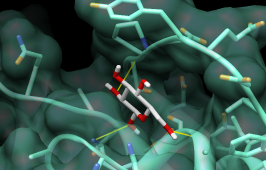

DOCK calculates possible binding modes, given the structures of ligand and receptor molecules. In a DOCK search, each compound (typically from a database of many thousands) is treated as a possible ligand, and the structure of a target macromolecule is treated as the receptor. Various scoring methods are used to identify the most favorable binding modes of a given molecule and then to rank the molecules. The output consists of many candidate ligands in their best-scoring poses. It is then up to human users to look through the results and decide which compounds should be tested in the real world. For further details, please consult the DOCK web site.
ViewDock facilitates the interactive selection of compounds from the output of DOCK. In this tutorial, the results of docking a small database of 30 compounds to the protein H-ras (from Protein Data Bank entry 121P) are used to illustrate the workings of ViewDock. See the ViewDock manual page for a more formal description of the program.
To follow along with the tutorial, first download the following files to a convenient location (all should be placed in the same folder or directory):
unix: chimeraA splash screen will appear, to be replaced in a few seconds by the main Chimera window. If you like, resize the Chimera window by dragging its lower right corner.
Start ViewDock (Tools... Surface/Binding Analysis... ViewDock), and with the resulting dialog, locate and open ras.mol2, the file of docked ligands.
|
The ViewDock ListBox will appear, and the first ligand in the file will be displayed in the graphics window. Move the ListBox aside if it is obstructing the graphics window or any of the other tools.
Next, we will open the structures of the receptor and its co-crystallized ligand and display them in a way that is convenient for evaluating the docked molecules. Often many different files of docked molecules will need to be evaluated in the context of the same receptor. It can be tedious to set up the same view over and over. One approach is to save a session with the target protein displayed as desired, and then repeatedly restart that session before opening different files of docked ligands with ViewDock. Another approach (used in this tutorial) is to put the necessary commands in a file and simply execute the command file as needed.
The command file (setup.com) contains:
open receptor.pdbSimply opening a command file will execute its contents. Choose File... Open, make sure the file type is all (guess type) or Chimera commands, and locate and open setup.com. It may take a few seconds to execute the commands.
open GCP.pdb
preset apply interactive 1
color aquamarine #1
disp #1 & #0 z<5
color orange,a #1@o=
color medium blue,a #1@n=
color magenta #2
repr bs #2
The lowest available model number is used for each successive structure opened, so the docked molecules (opened before the command file) are model number 0, the receptor is model 1, and GCP is model 2. Besides opening structures, the command file applies a ribbon/sticks preset, colors the receptor aquamarine, and displays receptor residues within 5 Å of any docked molecule. Oxygen atoms in the receptor are colored orange, nitrogens medium blue. The co-crystallized ligand GCP is shown in magenta ball-and-stick.
Throughout the tutorial, adjust the view as desired with the mouse and Side View (Tools... Viewing Controls... Side View).
The co-crystallized ligand GCP (shown in magenta) indicates the location of the active site. Ctrl-click to select any atom in GCP, press the keyboard up arrow to promote the selection to the whole residue, and then hide it:
Menu: Actions... Atoms/Bonds... hideThe docked compounds are enumerated in the top part of the ViewDock ListBox. If the ListBox has become obscured by other windows, it can be resurrected with Tools... ViewDock (near the bottom of the menu, below the horizontal line)... Raise. Since in this case Name is not very informative, it may be helpful to add other descriptors to the listing. Use the Column menu to show Description and Energy score, and to hide Name and Number.
Menu: Select... Clear Selection
Clicking on a line chooses the corresponding compound: the line is highlighted, just the chosen compound is shown in the main graphics window, and more detailed information is shown in the lower part of the ListBox. Try clicking various lines in the ListBox to choose different docked molecules. Multiple compounds may be chosen at once. Ctrl-click adds to an existing choice rather than replacing it. To choose a block of compounds without having to hold down the mouse button, click on the first (or last) and then Shift-click on the last (or first) in the desired block.
The listing can be sorted by any column, by clicking on the header. Make sure the list is sorted by Energy score, with the most negative values (which are the most favorable) at the top. Scroll down to the lowest line in the top panel of the ListBox and click on it to choose the worst-scoring molecule.
| worst-scoring molecule |
|---|
 |
As shown in the figure, this compound is not docked in the active site like the others. Its docking scores are zero.
There are three mutually exclusive states that can be assigned to docked compounds. Viable compounds are interesting (or have not been looked at yet), Deleted compounds are less interesting but may deserve another look, and Purged compounds are definitely not interesting. The S column shows V, D, and P to indicate these states. Viable and deleted but not purged molecules are included when File... Rewrite is used. Change the status of the worst-scoring molecule to purged by clicking the Purged checkbox near the bottom of the ListBox. Note that its listing disappears; make it reappear by checking the box next to List Purged in the Compounds menu.
Normally, a user will click on successive lines, examine the compounds in the binding site, and change the status of less interesting compounds to deleted or purged. Compounds can also be chosen by descriptor values and then changed in status collectively. Several sessions may be needed to whittle the list down sufficiently.
As an example, choose compounds based on their hydrogen-bonding interactions with the receptor. HBonds... Add Count to Entire Receptor will bring up the FindHBond tool. Make sure the inter-model mode is set. The hydrogen bonds will be shown as lines. Increase the Line width to 3 and change the H-bond color to yellow (clicking the color well opens the Color Editor, in which a new color can be chosen). Click OK. When the calculation is finished, new columns of descriptors will appear in the ListBox. Again, individual compounds can be examined by clicking on their respective lines in the ListBox. Use the Column menu to hide the descriptors HBond Ligand Atoms and HBond Receptor Atoms (the numbers of ligand and receptor atoms, respectively, participating in the detected ligand-receptor hydrogen bonds).
Compounds... Choose by Value opens an interface with several sections. Choose from Viable compounds and uncheck the boxes next to Description and Energy score to collapse the corresponding sections. In the HBonds (all) section, move the sliders to include 0-1 hydrogen bonds. A message near the top of the Choose by Value dialog will report that 17 of the 29 viable compounds meet the criteria. Click OK to choose the compounds and dismiss the dialog. The 17 viable compounds with 0-1 hydrogen bonds to the receptor will be chosen in the ListBox and displayed in the main Chimera window. Change these compounds to purged by clicking the Purged checkbox near the bottom of the ListBox. Uncheck the box next to List Purged in the Compounds menu to remove the purged compounds from the listing.
Finally, flip through the remaining listed compounds with the Movie feature. First, show the surface of the protein and make it transparent:
Menu: Select... Structure... protein
Menu: Actions... Surface... show
Menu: Actions... Surface... transparency... 60%
Menu: Select... Clear Selection
| binding site surface and H-bonds |
|---|
|  |